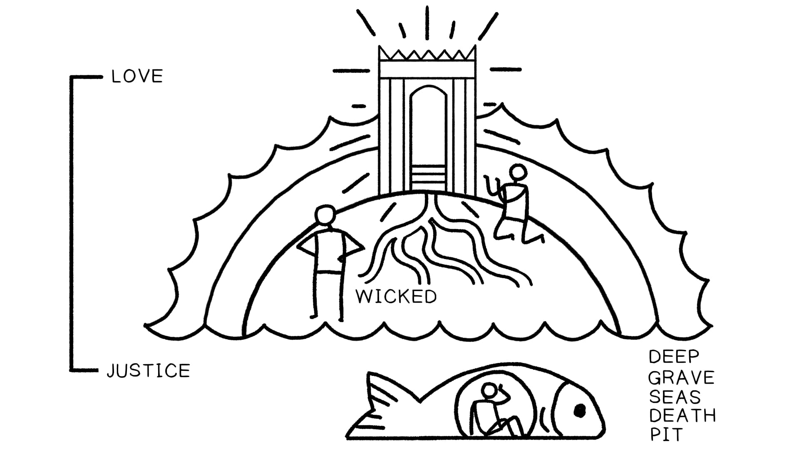

Na Bíblia, os céus representam a morada de Deus, a fonte da vida e a realidade suprema.In the Bible, the heavens represent God’s dwelling place, the source of life, and the ultimate reality.
Embora a presença de Deus permeie todo o universo (Sl.Although God’s presence permeates the whole universe (Ps.
36, 139), os céus significam singularmente a sua morada e a realidade suprema.36, 139), the heavens uniquely signify his dwelling place and the ultimate reality.
O ponto da história bíblica não é que a humanidade um dia ascenderá ao Céu, mas que o reino celestial virá e transformará a Terra.The point of the biblical story is not that humanity will one day ascend up to Heaven but that the heavenly realm will come and transform Earth.
A Terra para Baixo, para Fora e para Dentro: O Ermo, o Abismo, o Sheol e a SepulturaThe Land Down, Out, and Under: The Wilderness, Abyss, Sheol, and the Grave
Jonas 2:1-7 NASB*Jonah 2:1-7 NASB*
1 Então Jonas orou ao SENHOR seu Deus do estômago do peixe, 2 e disse: “Clamei da minha angústia ao SENHOR, e ele me respondeu. Gritei por socorro desde a profundidade do Sheol; você ouviu a minha voz. 3 Pois você me lançou nas profundezas, no coração dos mares, e a correnteza me engolfou. Todas as suas ondas e vagas passaram sobre mim. 4 Então eu disse: ‘Fui expulso da sua presença. No entanto, olharei novamente para o seu santo templo.’ 5 A água me envolveu até o ponto da morte. O grande abismo me engolfou, as ervas daninhas se enrolaram na minha cabeça. 6 Desci até as raízes dos montes. A terra com suas trancas estava ao meu redor para sempre, mas você trouxe a minha vida de volta da cova, ó SENHOR meu Deus. 7 Enquanto eu desfalecia, lembrei-me do SENHOR, e a minha oração chegou a você, no seu santo templo.” *Palavras-chave Adaptadas pelo Professor A oração de Jonas conecta sua situação no ventre do peixe à cosmologia bíblica, evocando temas do abismo, da sepultura, dos mares, da morte e da cova.1 Then Jonah prayed to the LORD his God from the stomach of the fish, 2 and he said, “I called out of my distress to the LORD, and he answered me. I cried for help from the depth of Sheol; you heard my voice. 3 For you had cast me into the deep, into the heart of the seas, and the current engulfed me. All your breakers and waves passed over me. 4 So I said, ‘I have been expelled from your sight. Nevertheless I will look again toward your holy temple.’ 5 Water encompassed me to the point of death. The great deep engulfed me, weeds were wrapped around my head. 6 I descended to the roots of the mountains. The earth with its bars was around me forever, but you have brought up my life from the pit, O LORD my God. 7 While I was fainting away, I remembered the LORD, and my prayer came to you, into your holy temple.” *Key Words Adapted by Teacher Jonah’s prayer connects his plight in the belly of the fish to biblical cosmology, evoking themes of the deep, the grave, the seas, death, and the pit.
O Peixe de Jonas como um Tipo de Sepultura no Ermo. Ilustração criada por Tim Mackie para BibleProject Classroom: Heaven and Earth (2019). O Ermo em Gênesis 1:2: Uma Imagem de “Nada”Jonah’s Fish as a Type of Wilderness Grave. Illustration created by Tim Mackie for BibleProject Classroom: Heaven and Earth (2019). Wilderness in Genesis 1:2: An Image of “Nothingness”
Gênesis 1:2 NASB*Genesis 1:2 NASB*
Ora, o terreno era selvagem e vazio (hebraico: tohu va-vohu) *Palavras-chave Adaptadas pelo Professor Outros Usos de Tohu ou Bohu: Vazio, Desabitado, ErmoNow, the land was wild and waste (Hebrew: tohu va-vohu) *Key Words Adapted by Teacher Other Uses of Tohu or Bohu: Empty, Uninhabited, Wasteland
9 Pois a porção do SENHOR é o seu povo; Jacó é a parte da sua herança. 10 Ele o encontrou numa terra deserta, e no uivo tohu de um ermo; ele o cercou, cuidou dele, guardou-o como a pupila do seu olho. *Palavras-chave Adaptadas pelo Professor9 For the LORD’S portion is his people; Jacob is the allotment of his inheritance. 10 He found him in a desert land, and in the howling tohu of a wilderness; he encircled him, he cared for him, he guarded him as the pupil of his eye. *Key Words Adapted by Teacher
Isaías 24:10-12 NASB*Isaiah 24:10-12 NASB*
10 A cidade de tohu está em ruínas; toda casa está fechada para que ninguém entre. 11 Há um clamor nas ruas por causa do vinho; toda alegria se transforma em tristeza. A alegria da terra é banida. 12 A desolação permanece na cidade e o portão é reduzido a ruínas. *Palavras-chave Adaptadas pelo Professor10 The city of tohu is broken down; every house is shut up so that none may enter. 11 There is an outcry in the streets concerning the wine; all joy turns to gloom. The gaiety of the earth is banished. 12 Desolation is left in the city and the gate is battered to ruins. *Key Words Adapted by Teacher
Isaías 45:18 NIV*Isaiah 45:18 NIV*
Pois assim diz o SENHOR—ele que criou os céus, ele é Deus; ele que formou e fez a terra, ele a fundou; ele não a criou para ser tohu, mas a formou para ser habitada—ele diz: “Eu sou o SENHOR, e não há outro.” *Palavras-chave Adaptadas pelo ProfessorFor this is what the LORD says—he who created the heavens, he is God; he who fashioned and made the earth, he founded it; he did not create it to be tohu, but formed it to be inhabited—he says: “I am the LORD, and there is no other.” *Key Words Adapted by Teacher
Gênesis 3:22-24 e Gênesis 4:17: Exílio “para o Leste” na Terra de Espinhos e AbrolhosGenesis 3:22-24 and Genesis 4:17: Exile “to the East” Into the Land of Thorns and Thistles
Gênesis 3:17-19 NASBGenesis 3:17-19 NASB
17 Então a Adão ele disse: “Porque você deu ouvidos à voz da sua mulher e comeu da árvore sobre a qual eu lhe ordenei, dizendo: ‘Você não comerá dela’; maldita é a terra por sua causa; com fadiga você comerá dela todos os dias da sua vida. 18 Espinhos e abrolhos ela fará crescer para você; e você comerá as plantas do campo; 19 com o suor do seu rosto você comerá pão, até que volte à terra, porque dela você foi tirado; pois você é pó, e ao pó voltará.”17 Then to Adam he said, “Because you have listened to the voice of your wife, and have eaten from the tree about which I commanded you, saying, ‘You shall not eat from it’; cursed is the ground because of you; in toil you will eat of it all the days of your life. 18 Both thorns and thistles it shall grow for you; and you will eat the plants of the field; 19 by the sweat of your face you will eat bread, till you return to the ground, because from it you were taken; for you are dust, and to dust you shall return.”
Gênesis 3:23-24 NASB*Genesis 3:23-24 NASB*
23 ... portanto, o SENHOR Deus o enviou para fora do jardim do Éden, para trabalhar a terra da qual ele foi tirado. 24 Ele baniu o homem para fora; e ao leste do jardim do Éden ele posicionou os querubins e a espada flamejante que se virava em todas as direções para guardar o caminho até a árvore da vida. *Palavras-chave Adaptadas pelo Professor23 ... therefore the LORD God sent him out from the garden of Eden, to work the ground from which he was taken. 24 So he banished the man out; and at the east of the garden of Eden he stationed the cherubim and the flaming sword which turned every direction to guard the way to the tree of life. *Key Words Adapted by Teacher
Gênesis 4:14-16 NASB*Genesis 4:14-16 NASB*
14 “Eis que você me baniu neste dia da face do chão; e da sua face eu estarei escondido, e serei um vagabundo e errante na terra“ ... 16 Então Caim saiu da presença do SENHOR e se estabeleceu na terra de Node, a leste do Éden. *Palavras-chave Adaptadas pelo Professor Tropos de Des-Criação de Cidades14 “Behold, you have banished me this day from the face of the ground; and from your face I will be hidden, and I will be a vagrant and a wanderer on the earth“ ... 16 Then Cain went out from the presence of the LORD, and settled in the land of Nod, east of Eden. *Key Words Adapted by Teacher City De-Creation Tropes
Isaías 34:10-15 NASBIsaiah 34:10-15 NASB
10 Não será apagada de noite nem de dia; a sua fumaça subirá para sempre. De geração em geração será desolada; ninguém passará por ela para todo o sempre. 11 Mas o pelicano e o ouriço a possuirão, e a coruja e o corvo habitarão nela; e ele estenderá sobre ela a linha de desolação e o prumo do vazio. 12 Os seus nobres—não há ninguém lá a quem possam proclamar rei— e todos os seus príncipes serão nada. 13 Espinhos subirão nas suas torres fortificadas,10 It will not be quenched night or day; its smoke will go up forever. From generation to generation it will be desolate; none will pass through it forever and ever. 11 But pelican and hedgehog will possess it, and owl and raven will dwell in it; and he will stretch over it the line of desolation and the plumb line of emptiness. 12 Its nobles—there is no one there whom they may proclaim king— and all its princes will be nothing. 13 Thorns will come up in its fortified towers,
urtigas e abrolhos nas suas cidades fortificadas; também será um refúgio de chacais e uma morada de avestruzes. 14 As criaturas do deserto se encontrarão com os lobos, o bode peludo também gritará para a sua espécie; sim, o monstro noturno se estabelecerá lá e encontrará para si um lugar de descanso. 15 A serpente da árvore fará o seu ninho e botará ovos lá, e os chocará e os reunirá sob a sua proteção. Sim, os falcões se reunirão lá, cada um com a sua espécie. O Dia da Expiação em Levítico 16: O Bode Expiatório Vai para o Desertonettles and thistles in its fortified cities; it will also be a haunt of jackals and an abode of ostriches. 14 The desert creatures will meet with the wolves, the hairy goat also will cry to its kind; yes, the night monster will settle there and will find herself a resting place. 15 The tree snake will make its nest and lay eggs there, and it will hatch and gather them under its protection. Yes, the hawks will be gathered there, every one with its kind. Day of Atonement in Levitcus 16: The Scapegoat Goes Into the Desert
Levítico 16:7-10 NIV*Leviticus 16:7-10 NIV*
7 Então ele tomará os dois bodes e os apresentará diante do SENHOR na entrada da tenda do encontro. 8 Ele sorteará os dois bodes—um sorteio para o SENHOR e o outro para Azazel. 9 Arão trará o bode cujo sorteio caiu para o SENHOR e o sacrificará como oferta pelo pecado. 10 Mas o bode escolhido por sorteio para Azazel será apresentado vivo diante do SENHOR para ser usado para fazer expiação, enviando-o ao ermo para Azazel. *Palavras-chave Adaptadas pelo Professor7 Then he is to take the two goats and present them before the LORD at the entrance to the tent of meeting. 8 He is to cast lots for the two goats—one lot for the LORD and the other for Aza’zel. 9 Aaron shall bring the goat whose lot falls to the LORD and sacrifice it for a sin offering. 10 But the goat chosen by lot for Aza’zel shall be presented alive before the LORD to be used for making atonement by sending it into the wilderness for Aza’zel. *Key Words Adapted by Teacher
Levítico 16:20-22 NIV*Leviticus 16:20-22 NIV*
20 Quando Arão tiver terminado de fazer expiação pelo lugar santíssimo, pela tenda do encontro e pelo altar, ele trará o bode vivo. 21 Ele colocará ambas as mãos sobre a cabeça do bode vivo e confessará sobre ele toda a maldade e rebelião dos israelitas—todos os seus pecados—e os colocará sobre a cabeça do bode. Ele enviará o bode embora para o ermo, sob os cuidados de alguém designado para a tarefa. 22 O bode levará sobre si todos os seus pecados para um lugar remoto (literalmente “uma terra que é cortada”); e o homem o soltará no ermo. *Palavras-chave Adaptadas pelo Professor Nova Criação como Ermo Transformado em Jardins20 When Aaron has finished making atonement for the most holy place, the tent of meeting and the altar, he shall bring forward the live goat. 21 He is to lay both hands on the head of the live goat and confess over it all the wickedness and rebellion of the Israelites— all their sins—and put them on the goat’s head. He shall send the goat away into the wilderness in the care of someone appointed for the task. 22 The goat will carry on itself all their sins to a remote place (lit. “a land that is cut off”); and the man shall release it into the wilderness. *Key Words Adapted by Teacher New Creation as Wilderness Transformed Into Gardens
Isaías 41:17-20 NIVIsaiah 41:17-20 NIV
17 Os pobres e necessitados procuram água, mas não há nenhuma; as suas línguas estão ressequidas de sede.17 The poor and needy search for water, but there is none; their tongues are parched with thirst.
Mas eu, o SENHOR, lhes responderei; eu, o Deus de Israel, não os abandonarei. 18 Farei rios fluírem nas alturas áridas e fontes dentro dos vales. Transformarei o deserto em açudes de água e a terra ressequida em fontes. 19 Porei no deserto o cedro e a acácia,But I the LORD will answer them; I, the God of Israel, will not forsake them. 18 I will make rivers flow on barren heights, and springs within the valleys. I will turn the desert into pools of water, and the parched ground into springs. 19 I will put in the desert the cedar and the acacia,
a murta e a oliveira. Estabelecerei juníperos no ermo, o abeto e o cipreste juntos, 20 para que as pessoas vejam e saibam, considerem e entendam, que a mão do SENHOR fez isso, que o Santo de Israel o criou.the myrtle and the olive. I will set junipers in the wasteland, the fir and the cypress together, 20 so that people may see and know, may consider and understand, that the hand of the LORD has done this, that the Holy One of Israel has created it.
Outras Ocorrências do Padrão do ErmoOther Occurrences of the Wilderness Pattern
Resumo da passagem dos Salmos (Sl. 107:33-37) Jesus testado e vitorioso no ermo (Mt. 4) Demônios e o ermo (Lc. 8:29) A prostituta sobre o dragão no ermo (Ap. 17:3) Sheol, o Abismo Aquoso e a Cova Lembre-se de que sob o terreno estavam as águas abissais, as trevas e a morte.Summary of Psalms passage (Ps. 107:33-37) Jesus tested and victorious in the wilderness (Matt. 4) Demons and the wilderness (Luke 8:29) The harlot on the dragon in the wilderness (Rev. 17:3) Sheol, the Watery Abyss, and the Pit Recall that under the land was the abysmal waters, darkness, and death.
Salmos 24:1-2 NIV*Psalm 24:1-2 NIV*
1 O terreno é do SENHOR, e tudo o que nele há, o mundo, e todos os que nele vivem; 2 pois ele o fundou sobre os mares e o estabeleceu sobre as águas. *Palavras-chave Adaptadas pelo Professor1 The land is the LORD’S, and everything in it, the world, and all who live in it; 2 for he founded it on the seas and established it on the waters. *Key Words Adapted by Teacher
Salmos 69:1-2, 15 NASB*Psalm 69:1-2, 15 NASB*
1 Salva-me, ó Deus, pois as águas ameaçaram a minha vida. 2 Afundei em lama profunda, e não há onde firmar o pé; entrei em águas profundas, e uma inundação me transborda. 15 Que a inundação da água não me transborde, nem o abismo me engula, nem a cova feche a sua boca sobre mim. *Palavras-chave Adaptadas pelo Professor1 Save me, O God, for the waters have threatened my life. 2 I have sunk in deep mire, and there is no foothold; I have come into deep waters, and a flood overflows me. 15 May the flood of water not overflow me nor the deep swallow me up, nor the pit shut its mouth on me. *Key Words Adapted by Teacher
Salmos 88:3-7 NASB*Psalm 88:3-7 NASB*
3 Pois a minha alma se fartou de problemas, e a minha vida se aproximou do Sheol. 4 Sou contado entre os que descem à cova; tornei-me como um homem sem força, 5 abandonado entre os mortos, como os mortos que jazem na sepultura,3 For my soul has had enough troubles, and my life has drawn near to Sheol. 4 I am reckoned among those who go down to the pit; I have become like a man without strength, 5 forsaken among the dead, like the slain who lie in the grave,
de quem você não se lembra mais, e que foram cortados da sua mão. 6 Você me colocou na cova mais baixa, em lugares escuros, nas profundezas. 7 ... e você me afligiu com todas as suas ondas.whom you remember no more, and they are cut off from your hand. 6 You have put me in the lowest pit, in dark places, in the depths. 7 ... and you have afflicted me with all your waves.
*Palavras-chave Adaptadas pelo Professor*Key Words Adapted by Teacher
Salmos 18:4-5 NASB*Psalm 18:4-5 NASB*
4 As cordas da morte me cercaram, e as torrentes da impiedade me aterrorizaram. 5 As cordas do Sheol me rodearam; os laços da morte me confrontaram. *Palavras-chave Adaptadas pelo Professor4 The cords of death encompassed me, and the torrents of ungodliness terrified me. 5 The cords of Sheol surrounded me; the snares of death confronted me. *Key Words Adapted by Teacher
Salmos 115:16-17 NASB*Psalm 115:16-17 NASB*
16 Os céus são os céus do SENHOR,16 The heavens are the heavens of the LORD,
Mas a terra ele deu aos filhos dos homens. 17 Os mortos não louvam o SENHOR, nem nenhum dos que descem ao silêncio.But the earth he has given to the sons of men. 17 The dead do not praise the LORD, Nor do any who go down into silence.
*Palavras-chave Adaptadas pelo Professor*Key Words Adapted by Teacher
Na Bíblia, o Sheol é o reino dos mortos. “Abaixo” (Dt. 32:22; Sl. 86:13; Jó 11:8; Pv. 9:18) “A cova” (Jn. 2:6; Sl. 40:2; Is. 14:15; Ez. 32:23) “As profundezas do terreno” (Sl. 71:20) Associado à sujeira e aos vermes (Jó 17:16; Is. 14:11) O oposto cosmológico dos céus (Jó 11:8; Sl. 139:8; Am. 9:2)In the Bible, Sheol is the realm of the dead. “Below” (Deut. 32:22; Ps. 86:13; Job 11:8; Prov. 9:18) “The pit” (Jon. 2:6; Ps. 40:2; Isa. 14:15; Ezek. 32:23) “The depths of the land” (Ps. 71:20) Associated with dirt and worms (Job 17:16; Isa. 14:11) The cosmological opposite of the skies (Job 11:8; Ps. 139:8; Amos 9:2)
Salmos 139:7-9 NASB*Psalm 139:7-9 NASB*
7 Para onde posso ir do seu Espírito? Ou para onde posso fugir da sua presença? 8 Se eu subir ao céu, você está lá; se eu fizer a minha cama no Sheol, eis que você está lá. 9 Se eu tomar as bordas/asas da alvorada, se eu habitar no fim do mar ... *Palavras-chave Adaptadas pelo Professor Metáforas Associadas ao Sheol Trevas, o estado pré-criação de Gênesis 1 (Jó 17:21; Sl. 88:2-6, 10-12; Lm. 3:6) Trancado com portões e trancas (Jn. 2:6; Is. 38:10) Meio-sono e fraqueza (Is. 14:10; Sl. 94:17, 115:17; Ez. 32:21; Ec. 9:5-6)7 Where can I go from your Spirit? Or where can I flee from your presence? 8 If I ascend to heaven, you are there; if I make my bed in Sheol, behold, you are there. 9 If I take to the edges/wings of the dawn, if I dwell in the end of the sea ... *Key Words Adapted by Teacher Metaphors Associated with Sheol Darkness, the pre-creation state of Genesis 1 (Job 17:21; Ps. 88:2-6, 10-12; Lam. 3:6) Locked with gates and bars (Jon. 2:6; Isa. 38:10) Half-sleep and weakness (Isa. 14:10; Ps. 94:17, 115:17; Ezek. 32:21; Eccl. 9:5-6)
A casa dos reis derrotados do passado (Is. 14:9-15) Casa dos ímpios (Sl. 9:17, 31:17, 49:14, 141:7; Jó 24:19; Pv. 5:5, 7:27, 9:18) De lá os justos aguardam a redenção (Sl. 14, 30:3, 40:2, 71:20, 86:13, 88:6)The home of defeated kings of old (Isa. 14:9-15) Home of the wicked (Ps. 9:17, 31:17, 49:14, 141:7; Job 24:19; Prov. 5:5, 7:27, 9:18) From it the righteous await redemption (Ps. 14, 30:3, 40:2, 71:20, 86:13, 88:6)
Salmos 9:17-18 NIV*Psalm 9:17-18 NIV*
17 Os ímpios descem ao Sheol, todas as nações que se esquecem de Deus. 18 Mas Deus nunca se esquecerá dos necessitados; a esperança dos aflitos nunca perecerá. *Palavras-chave Adaptadas pelo Professor17 The wicked go down to Sheol, all the nations that forget God. 18 But God will never forget the needy; the hope of the afflicted will never perish. *Key Words Adapted by Teacher
Salmos 31:14-17 NIV*Psalm 31:14-17 NIV*
14 Mas eu confio em você, SENHOR; eu digo: “Você é o meu Deus.” 15 Os meus tempos estão nas suas mãos; livra-me das mãos dos meus inimigos, dos que me perseguem. 16 Faça o seu rosto resplandecer sobre o seu servo; salva-me no seu amor infalível. 17 Não me deixe ser envergonhado, SENHOR, pois clamei a você; mas que os ímpios sejam envergonhados e fiquem em silêncio no Sheol. *Palavras-chave Adaptadas pelo Professor14 But I trust in you, LORD; I say, “You are my God.” 15 My times are in your hands; deliver me from the hands of my enemies, from those who pursue me. 16 Let your face shine on your servant; save me in your unfailing love. 17 Let me not be put to shame, LORD, for I have cried out to you; but let the wicked be put to shame and be silent in Sheol. *Key Words Adapted by Teacher
Salmos 49:12-15 NIV*Psalm 49:12-15 NIV*
12 As pessoas, apesar da sua riqueza, não perduram; são como os animais que perecem. 13 Este é o destino dos que confiam em si mesmos, e dos seus seguidores, que aprovam as suas palavras. 14 São como ovelhas e estão destinados a morrer; a morte será o seu pastor, mas os retos dominarão sobre eles pela manhã. As suas formas se decomporão na sepultura, longe das suas mansões principescas. 15 Mas Deus me redimirá do Sheol; certamente ele me levará para si mesmo. *Palavras-chave Adaptadas pelo Professor12 People, despite their wealth, do not endure; they are like the beasts that perish. 13 This is the fate of those who trust in themselves, and of their followers, who approve their sayings. 14 They are like sheep and are destined to die; death will be their shepherd, but the upright will rule over them in the morning. Their forms will decay in the grave, far from their princely mansions. 15 But God will redeem me from Sheol; he will surely take me to himself. *Key Words Adapted by Teacher
Salmos 71:19-21 NIVPsalm 71:19-21 NIV
19 A sua justiça, ó Deus, alcança os céus, você que fez grandes coisas.19 Your righteousness, God, reaches to the heavens, you who have done great things.
Quem é como você, ó Deus? 20 Embora você me tenha feito ver problemas, muitos e amargos, você restaurará a minha vida novamente; das profundezas da terra você me trará de volta. 21 Você aumentará a minha honra e me consolará mais uma vez. Outros exemplos de restauração do exílio como ressurreição incluem Oséias 6:1-3 e Ezequiel 37:1-14.Who is like you, God? 20 Though you have made me see troubles, many and bitter, you will restore my life again; from the depths of the earth you will again bring me up. 21 You will increase my honor and comfort me once more. Other examples of restoration from exile as resurrection include Hosea 6:1-3 and Ezekiel 37:1-14.
Os Céus AcimaThe Heavens/Skies Above
Deus é retratado habitando acima dos céus. Esta imagem espacial deixa claro que o reino divino é transcendente e está acima de tudo, um lugar apropriado para o trono divino de Deus.God is depicted as dwelling above the heavens. This spatial image makes clear that the divine realm is transcendent and above all, a fitting place for God’s divine throne.
Salmos 11:4 NIVPsalm 11:4 NIV
O SENHOR está no seu santo templo; o SENHOR está no seu trono celestial. Ele observa a todos na terra; os seus olhos os examinam.The LORD is in his holy temple; the LORD is on his heavenly throne. He observes everyone on earth; his eyes examine them.
Isaías 66:1-2 NIVIsaiah 66:1-2 NIV
1 Assim diz o SENHOR: “O céu é o meu trono, e o terreno é o meu estrado de pés. Onde está a casa que você me construirá? Onde será o meu lugar de descanso? 2 Não foi a minha mão que fez todas estas coisas, e assim elas vieram a existir?” declara o SENHOR.1 This is what the LORD says: “Heaven is my throne, and the land is my footstool. Where is the house you will build for me? Where will my resting place be? 2 Has not my hand made all these things, and so they came into being?” declares the LORD.

Ilustração da sessão 23.Illustration for session 23.
Pergunta para ReflexãoReflection Question
Como a palavra “céu(s)” é usada hoje, e como isso se compara com o uso bíblico de “céus”?How is the word “heaven(s)” used today, and how does this compare with the biblical use of “heavens”?